Questo documento raccoglie tutto il materiale della lezione (circa 7 ore) e va letto con R aperto accanto: il modo migliore per imparare è eseguire il codice man mano che lo incontrate, modificarlo e osservare che cosa cambia.
Lungo il percorso troverete degli esercizi (riquadri azzurri ✏️): provate a risolverli da soli prima di aprire la soluzione (riquadri verdi, chiusi di default).
Prima di iniziare:
installate i pacchetti necessari: install.packages(c("ggplot2", "sjPlot", "effects", "performance", "MuMIn"))
scaricate il file kidiq.csv e salvatelo in una cartella dati dentro la vostra cartella di lavoro.
1 Il modello lineare
Un modello lineare è un modello statistico della forma
\[
Y = X\beta + \epsilon
\]
dove \(Y\) è la variabile risposta (o variabile dipendente), \(X\) è un insieme di predittori (o variabili indipendenti) e \(\epsilon\) è la componente d’errore, cioè la parte di \(Y\) che il modello non spiega.
Con \(\beta\) indichiamo i coefficienti di regressione: lo scopo del modello è proprio stimare questi parametri a partire dai dati osservati.
Questi modelli si chiamano lineari perché la relazione ipotizzata tra i predittori e la variabile dipendente è assunta essere lineare: ogni predittore contribuisce alla previsione di \(Y\) in modo additivo, moltiplicato per il proprio coefficiente.
I predittori possono essere quantitativi (es. età, QI) oppure categoriali (es. genere, gruppo sperimentale): vedremo che il modello lineare li gestisce entrambi, ed è proprio questa flessibilità a renderlo lo strumento di base dell’analisi dei dati in psicologia e non solo.
1.1 Le assunzioni del modello di regressione
Perché le stime e le inferenze del modello siano valide, il modello di regressione si fonda su alcune assunzioni:
1. Indipendenza tra \(X\) ed errore. La variabile \(X\) e l’errore sono indipendenti nella popolazione: i predittori non contengono informazione sull’errore.
2. Indipendenza degli errori. Ogni coppia di errori \(\epsilon_i\) e \(\epsilon_j\) è indipendente, per \(i \neq j\): l’errore di un’osservazione non dice nulla sull’errore di un’altra (questa assunzione cade, ad esempio, con misure ripetute sugli stessi soggetti).
3. Linearità. Il valore atteso dell’errore, dato il valore di \(X\), è zero: \(E(\epsilon_i) = E(\epsilon\,|\,x_i) = 0\). In altre parole, la relazione tra \(X\) e \(Y\) è davvero una retta: il modello non sbaglia sistematicamente in nessuna zona di \(X\).
4. Omoschedasticità (varianza costante). La varianza degli errori è la stessa per qualunque valore di \(X\): \(V(\epsilon\,|\,x_i) = \sigma^2\).
5. Normalità. Gli errori si distribuiscono normalmente: \(\epsilon_i \sim \mathcal{N}(0, \sigma^2)\).
Nota
Le assunzioni riguardano gli errori, non la variabile \(Y\) di per sé: non serve che \(Y\) sia normale, serve che lo siano i residui del modello. Torneremo su questo punto nella Sezione 5, quando impareremo a verificare queste assunzioni con la diagnostica grafica.
2 La regressione lineare semplice
Un modello con un solo predittore\(X\) e una variabile dipendente \(Y\) quantitativa si chiama regressione lineare semplice.
2.1 Un solo predittore: quantitativo o categoriale
Con un solo predittore, la formulazione del modello cambia a seconda del tipo di variabile:
1. Se \(X\) è continua/quantitativa:
\[
Y = \beta_0 + \beta_1 X + \epsilon
\]
dove \(\beta_0\) è l’intercetta (il valore atteso di \(Y\) quando \(X = 0\)) e \(\beta_1\) è la pendenza (di quanto cambia, in media, \(Y\) quando \(X\) aumenta di una unità).
Per fortuna non dobbiamo occuparci noi della ricodifica: R la fa automaticamente quando il predittore è un factor. Quello che dobbiamo capire bene è il significato della ricodifica, per poter interpretare correttamente i parametri stimati: la categoria di riferimento (quella con tutte le dummy a 0) finisce nell’intercetta, e ciascun \(\beta_j\) esprime la differenza tra la categoria \(j\) e quella di riferimento.
2.2 I dati: kidiq
In tutta la dispensa useremo un dataset classico (Gelman & Hill), che contiene le seguenti variabili relative a un campione di bambini di 3–4 anni:
kid_score: punteggio del bambino in un test cognitivo;
mom_hs: istruzione della madre (1 = diplomata, 0 = non diplomata);
mom_iq: QI della madre;
mom_work: condizione lavorativa della madre nei primi anni di vita del bambino (4 categorie);
mom_age: età della madre.
Carichiamo i dati e sistemiamo le variabili categoriali, che nel file sono codificate come numeri:
Abbiamo 434 osservazioni e 5 variabili. Notate che mom_hs e mom_work ora sono factor: è così che R sa che deve trattarle come categoriali (e costruire le dummy al posto nostro).
✏️ Esercizio 1 — Esplorare i dati
Prima di stimare qualsiasi modello, è buona pratica guardare i dati. Con i comandi di base di R:
quante madri sono diplomate e quante no?
calcolate media e deviazione standard di kid_score;
disegnate l’istogramma di kid_score: la distribuzione vi sembra simmetrica?
Soluzione — Esercizio 1
table(kidiq$mom_hs)
0 1
93 341
mean(kidiq$kid_score)
[1] 86.79724
sd(kidiq$kid_score)
[1] 20.41069
hist(kidiq$kid_score, main ="", xlab ="Punteggio del bambino")
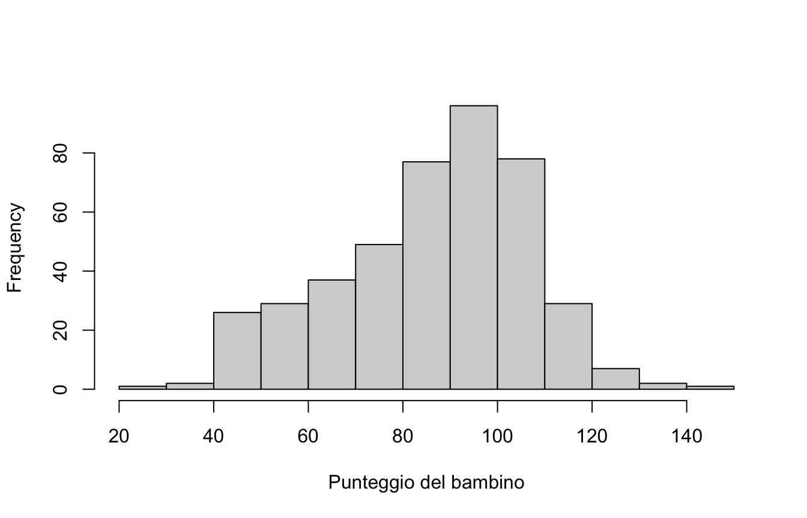
Le madri diplomate sono 341, le non diplomate 93. Il punteggio medio dei bambini è circa 87, con deviazione standard di circa 20 punti. L’istogramma mostra una distribuzione leggermente asimmetrica a sinistra (qualche punteggio molto basso), ma nulla di drammatico. Ricordate comunque che le assunzioni del modello riguardano i residui, non la distribuzione di \(Y\).
2.3 Un predittore numerico
Vogliamo valutare se il QI della madre è predittivo del punteggio del bambino. Stimiamo il modello con la funzione lm() (linear model), la cui sintassi è lm(risposta ~ predittore, data = dati):
m1 <-lm(kid_score ~ mom_iq, data = kidiq)plot(kid_score ~ mom_iq, data = kidiq,xlab ="QI della madre", ylab ="Punteggio del bambino")abline(m1, col ="red", lwd =2)
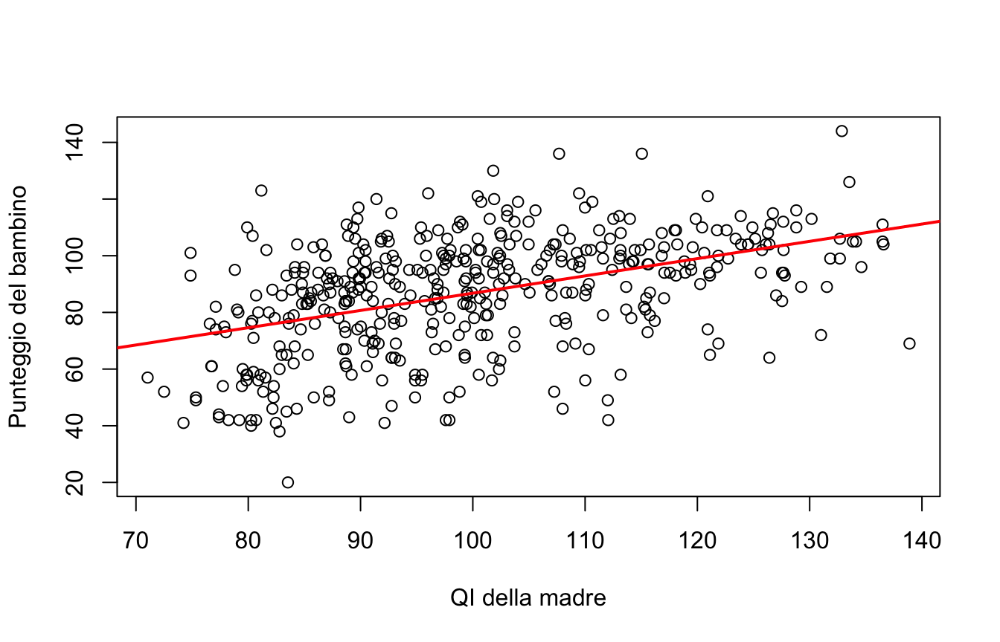
I coefficienti stimati sono:
coef(m1)
(Intercept) mom_iq
25.7997778 0.6099746
L’equazione di regressione è dunque
\[
\hat{Y} = 25.8 + 0.61 X
\]
dove il “cappello” su \(Y\) indica che si tratta dei valori previsti dal modello. Come si leggono i coefficienti?
\(\beta_1 = 0.61\): per ogni punto di QI in più della madre, il punteggio atteso del bambino aumenta in media di 0.61 punti;
\(\beta_0 = 25.8\): è il punteggio atteso di un bambino la cui madre ha QI pari a zero. Un valore privo di senso! L’intercetta serve al modello, ma non sempre ha un’interpretazione sostantiva: per renderla interpretabile si può centrare il predittore (es. mom_iq - 100), così l’intercetta diventa il punteggio atteso per una madre con QI = 100.
2.4 La valutazione delle stime: summary()
La funzione summary() restituisce il quadro completo del modello:
summary(m1)
Call:
lm(formula = kid_score ~ mom_iq, data = kidiq)
Residuals:
Min 1Q Median 3Q Max
-56.753 -12.074 2.217 11.710 47.691
Coefficients:
Estimate Std. Error t value Pr(>|t|)
(Intercept) 25.79978 5.91741 4.36 1.63e-05 ***
mom_iq 0.60997 0.05852 10.42 < 2e-16 ***
---
Signif. codes: 0 '***' 0.001 '**' 0.01 '*' 0.05 '.' 0.1 ' ' 1
Residual standard error: 18.27 on 432 degrees of freedom
Multiple R-squared: 0.201, Adjusted R-squared: 0.1991
F-statistic: 108.6 on 1 and 432 DF, p-value: < 2.2e-16
Leggiamo l’output pezzo per pezzo:
Residuals: la distribuzione dei residui (osservato − previsto). Se il modello è adeguato, mediana vicina a 0 e quartili circa simmetrici.
Estimate: le stime dei coefficienti, già viste con coef().
Std. Error: l’errore standard di ciascuna stima, cioè la sua incertezza: con campioni diversi otterremmo stime un po’ diverse, e l’errore standard ne quantifica la variabilità.
t value e Pr(>|t|): la statistica \(t\) (stima / errore standard) e il relativo p-value per l’ipotesi nulla \(\beta = 0\). Qui il test su mom_iq è altamente significativo: il QI della madre predice il punteggio del bambino.
Residual standard error (\(\sigma\)): la deviazione standard dei residui, circa 18.3 punti. Ci dice di quanto, in media, il modello “sbaglia” le previsioni.
Multiple R-squared: la proporzione di variabilità di \(Y\) spiegata dal modello, qui circa il 20%. Ne riparleremo nella Sezione 5.6.
F-statistic: il test globale del modello contro il modello nullo (solo intercetta).
✏️ Esercizio 2 — La vostra prima regressione
Stimate un modello in cui il punteggio del bambino è predetto dall’età della madre (mom_age).
Scrivete l’equazione di regressione stimata.
Come interpretate la pendenza?
Qual è il punteggio previsto per un bambino la cui madre ha 20 anni? E 30 anni?
Guardando \(R^2\), l’età della madre vi sembra un buon predittore?
Soluzione — Esercizio 2
m_age <-lm(kid_score ~ mom_age, data = kidiq)coef(m_age)
(Intercept) mom_age
70.9569209 0.6951862
summary(m_age)$r.squared
[1] 0.008463666
\(\hat{Y} = 70.96 + 0.70 \cdot \text{mom\_age}\).
Per ogni anno in più della madre, il punteggio atteso del bambino aumenta in media di 0.70 punti.
Possiamo calcolarli a mano oppure, meglio, con predict():
\(R^2 \approx 0.009\): l’età della madre spiega meno dell’1% della variabilità dei punteggi. La pendenza è positiva ma il predittore, da solo, è debolissimo — un buon promemoria del fatto che un coefficiente “significativo o quasi” non implica un modello utile.
✏️ Esercizio 3 — Intervalli di confidenza
Il p-value non è l’unico modo (e nemmeno il migliore) per quantificare l’incertezza. Con la funzione confint() calcolate l’intervallo di confidenza al 95% per i coefficienti di m1. Come lo interpretate, in particolare per mom_iq? L’intervallo contiene lo zero?
L’intervallo per mom_iq va da circa 0.50 a 0.73: i dati sono compatibili con un effetto del QI della madre compreso tra mezzo punto e tre quarti di punto per ogni punto di QI. Lo zero è ben lontano dall’intervallo, coerentemente con il p-value piccolissimo visto nel summary(). Notate quanto è più informativo dell’enunciato “p < .05”: l’intervallo ci dice quanto grande è plausibilmente l’effetto.
2.5 La diagnostica grafica
Applicando plot() a un oggetto lm otteniamo quattro grafici diagnostici, che servono a controllare le assunzioni della Sezione 1.1:
par(mfrow =c(2, 2))plot(m1)
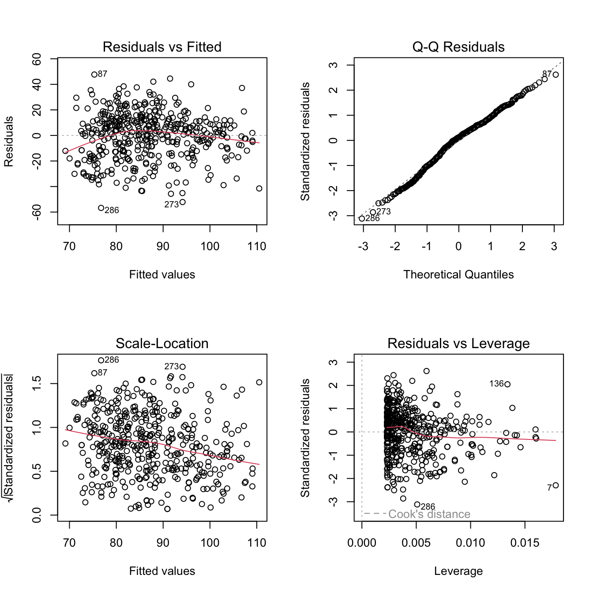
par(mfrow =c(1, 1))
Residuals vs Fitted: i residui contro i valori previsti. Se la relazione è davvero lineare, i punti si dispongono a caso attorno allo zero, senza curvature (linearità) né forme a imbuto (omoschedasticità).
Normal Q-Q: confronta i quantili dei residui standardizzati con quelli di una normale; se l’assunzione di normalità regge, i punti stanno sulla diagonale.
Scale-Location: versione “stabilizzata” del primo grafico, utile per vedere se la variabilità dei residui cresce con i valori previsti (eteroschedasticità).
Residuals vs Leverage: evidenzia osservazioni con grande leva e grande residuo, cioè i potenziali casi influenti (ne parleremo nella Sezione 5.4, insieme alla distanza di Cook).
R etichetta automaticamente i casi più estremi (qui 87, 273, 286): non sono necessariamente un problema, ma meritano un’occhiata.
2.6 Un predittore dicotomico
Vogliamo ora valutare se il livello di istruzione della madre (diplomata o no) è predittivo del punteggio del bambino. Il predittore è un factor con due livelli, quindi R costruisce per noi la dummy \(D\) (0 = non diplomata, 1 = diplomata):
m2 <-lm(kid_score ~ mom_hs, data = kidiq)plot(kid_score ~ mom_hs, data = kidiq,xlab ="Diploma della madre", ylab ="Punteggio del bambino")
(Con un predittore factor, plot() produce automaticamente dei boxplot.)
coef(m2)
(Intercept) mom_hs1
77.54839 11.77126
L’equazione di regressione è
\[
\hat{Y} = 77.55 + 11.77 D
\]
L’interpretazione, con una dummy, è in termini di medie di gruppo:
\(\beta_0 = 77.55\): punteggio medio previsto quando \(D = 0\), cioè la media dei bambini con madre non diplomata;
\(\beta_1 = 11.77\): la differenza tra le medie dei due gruppi. I figli di madri diplomate ottengono in media 11.77 punti in più (\(77.55 + 11.77 = 89.32\)).
summary(m2)
Call:
lm(formula = kid_score ~ mom_hs, data = kidiq)
Residuals:
Min 1Q Median 3Q Max
-57.55 -13.32 2.68 14.68 58.45
Coefficients:
Estimate Std. Error t value Pr(>|t|)
(Intercept) 77.548 2.059 37.670 < 2e-16 ***
mom_hs1 11.771 2.322 5.069 5.96e-07 ***
---
Signif. codes: 0 '***' 0.001 '**' 0.01 '*' 0.05 '.' 0.1 ' ' 1
Residual standard error: 19.85 on 432 degrees of freedom
Multiple R-squared: 0.05613, Adjusted R-squared: 0.05394
F-statistic: 25.69 on 1 and 432 DF, p-value: 5.957e-07
Il test \(t\) su mom_hs1 ci dice che la differenza tra i due gruppi è statisticamente significativa, ma \(R^2 \approx 0.056\): il diploma della madre, da solo, spiega poco della variabilità dei punteggi.
✏️ Esercizio 4 — Regressione e medie di gruppo
Verificate “a mano” l’interpretazione dei coefficienti di m2:
calcolate la media di kid_score separatamente per i due gruppi di mom_hs (suggerimento: tapply());
confrontate le medie ottenute con i coefficienti del modello;
(extra) confrontate l’output di summary(m2) con quello di un test \(t\) a varianze uguali: t.test(kid_score ~ mom_hs, data = kidiq, var.equal = TRUE). Che cosa notate?
Soluzione — Esercizio 4
medie <-tapply(kidiq$kid_score, kidiq$mom_hs, mean)medie
0 1
77.54839 89.31965
medie[2] - medie[1]
1
11.77126
coef(m2)
(Intercept) mom_hs1
77.54839 11.77126
La media del gruppo 0 (77.55) coincide con l’intercetta e la differenza tra le medie (11.77) coincide con il coefficiente della dummy.
t.test(kid_score ~ mom_hs, data = kidiq, var.equal =TRUE)
Two Sample t-test
data: kid_score by mom_hs
t = -5.0685, df = 432, p-value = 5.957e-07
alternative hypothesis: true difference in means between group 0 and group 1 is not equal to 0
95 percent confidence interval:
-16.335924 -7.206598
sample estimates:
mean in group 0 mean in group 1
77.54839 89.31965
La statistica \(t\) e il p-value sono identici (a parte il segno, che dipende solo dall’ordine dei gruppi) a quelli del coefficiente mom_hs1 nel summary(m2): il test \(t\) per due gruppi indipendenti è un modello lineare con un predittore dicotomico. Molti dei test “classici” sono casi particolari del modello lineare.
3 La regressione multipla
Quando il modello ha più predittori, la formulazione può essere scritta:
Quando il modello ha più predittori (quantitativi e/o categoriali) e una sola variabile dipendente quantitativa \(Y\), si parla di regressione lineare multipla.
3.1 Un esempio con due predittori
Consideriamo un modello che predice il punteggio del bambino a partire dal QI e dal livello di istruzione della madre. In R basta sommare i predittori nella formula:
m3 <-lm(kid_score ~ mom_iq + mom_hs, data = kidiq)coef(m3)
Poiché \(D \in \{0, 1\}\), graficamente otteniamo due rette parallele: stessa pendenza (0.56), intercette diverse (25.73 per le madri non diplomate, \(25.73 +
5.95 = 31.68\) per le diplomate):
L’interpretazione dei coefficienti cambia in modo sottile ma importante: ogni coefficiente esprime l’effetto di quel predittore a parità degli altri. Ad esempio, \(\beta_1 = 0.56\) è l’effetto del QI della madre a parità di livello di istruzione.
3.2 L’analisi degli effetti
Con anova() otteniamo la scomposizione della variabilità spiegata dai singoli effetti del modello:
anova(m3)
Analysis of Variance Table
Response: kid_score
Df Sum Sq Mean Sq F value Pr(>F)
mom_iq 1 36249 36249 110.2114 < 2.2e-16 ***
mom_hs 1 2380 2380 7.2369 0.007419 **
Residuals 431 141757 329
---
Signif. codes: 0 '***' 0.001 '**' 0.01 '*' 0.05 '.' 0.1 ' ' 1
summary(m3)$r.squared
[1] 0.2141465
Entrambi gli effetti risultano significativi e il modello spiega circa il 21.4% della variabilità dei punteggi (era il 20.1% con il solo QI: l’istruzione della madre aggiunge poco, una volta tenuto conto del QI).
Avviso
Attenzione: anova() usa somme dei quadrati sequenziali (Tipo I): l’ordine in cui i predittori entrano nella formula può cambiare i risultati, quando i predittori sono correlati tra loro.
3.3 La rappresentazione grafica degli effetti
Per visualizzare gli effetti stimati dal modello esistono comodi pacchetti dedicati. Con sjPlot:
library(sjPlot)plot_model(m3, type ="eff", terms ="mom_iq")plot_model(m3, type ="eff", terms ="mom_hs")
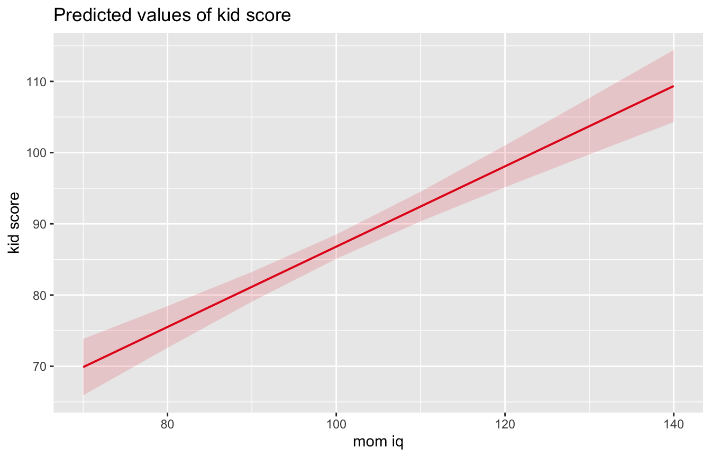
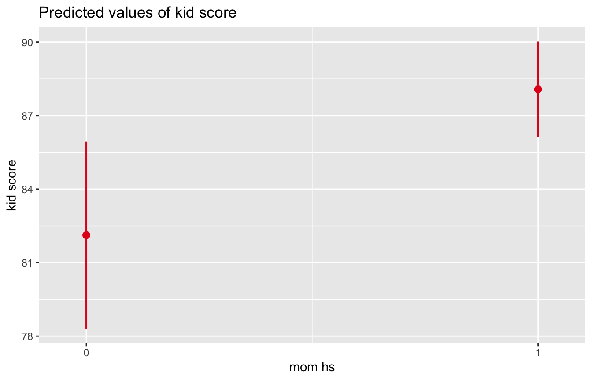
Con effects:
library(effects)plot(allEffects(m3))
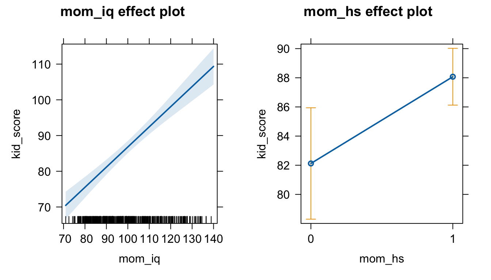
Entrambi mostrano l’effetto di ciascun predittore tenendo gli altri fissi (ai loro valori medi o di riferimento), con le relative bande di confidenza.
✏️ Esercizio 5 — Regressione multipla
Stimate un modello con mom_iq e mom_age come predittori di kid_score.
Scrivete l’equazione di regressione.
Confrontate il coefficiente di mom_iq con quello che aveva nel modello semplice m1: è cambiato molto?
Confrontate l’\(R^2\) con quello di m1: quanto aggiunge l’età della madre?
Disegnate gli effetti del modello con plot(allEffects(...)).
Soluzione — Esercizio 5
m5 <-lm(kid_score ~ mom_iq + mom_age, data = kidiq)coef(m5)
Il coefficiente di mom_iq passa da 0.610 a 0.604: praticamente invariato (QI ed età della madre sono poco correlati, quindi i loro effetti non si “rubano” variabilità a vicenda).
\(R^2\) passa da 0.201 a 0.204: l’età della madre, a parità di QI, aggiunge pochissimo.
plot(allEffects(m5))
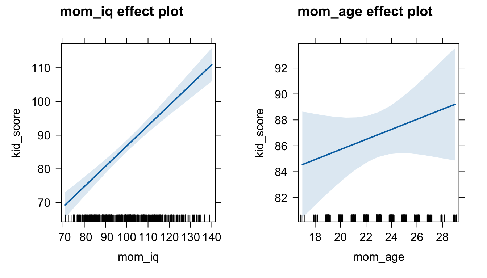
Notate la diversa ampiezza delle bande di confidenza: l’effetto del QI è stimato con molta più precisione di quello dell’età.
4 Gli effetti di interazione
Nel modello m3 abbiamo imposto che l’effetto del QI fosse lo stesso nei due gruppi di madri (rette parallele). Ma potrebbe non essere così: introduciamo allora l’interazione tra i predittori, che in R si indica con *:
m4 <-lm(kid_score ~ mom_iq * mom_hs, data = kidiq)coef(m4)
La formula mom_iq * mom_hs è una scorciatoia per mom_iq + mom_hs + mom_iq:mom_hs: effetti principali più interazione. L’equazione di regressione diventa
\[
\hat{Y} = -11.48 + 0.97 X + 51.27 D - 0.48\, DX
\]
Il termine \(DX\) (prodotto tra dummy e QI) permette alle due rette di avere pendenze diverse:
ggplot(kidiq, aes(x = mom_iq, y = kid_score, colour = mom_hs)) +geom_point(alpha =0.5) +geom_smooth(method ="lm", se =FALSE) +labs(x ="QI della madre", y ="Punteggio del bambino", colour ="Diploma")
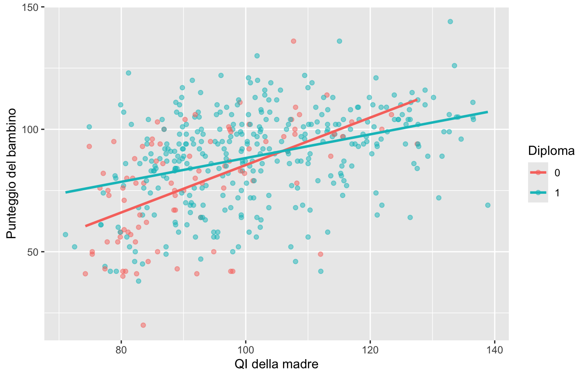
Sostituendo i valori di \(D\) si ottengono le equazioni delle due rette:
L’interpretazione: tra le madri non diplomate il QI “pesa” molto di più (quasi un punto per punto di QI), mentre tra le diplomate la relazione è circa la metà. Con un’interazione, gli effetti principali non si interpretano più da soli: l’effetto di un predittore dipende dal livello dell’altro.
Le rette si incrociano dove \(-11.48 + 0.97X = 39.79 + 0.49X\), cioè \(X = 51.27 / 0.48 \approx 106\) (provate a ricavarlo: è il rapporto tra il coefficiente della dummy e quello dell’interazione, cambiato di segno). Sotto QI ≈ 106 i figli di madri diplomate hanno punteggi attesi più alti, sopra la relazione si inverte — anche se, guardando il grafico, le due rette oltre quel punto sono molto vicine e le bande di confidenza si sovrappongono.
5 La valutazione dell’adattamento
Stimare un modello è facile; la domanda successiva è: quanto è buono? In questa sezione vediamo tre strumenti complementari: l’analisi dei residui, il predictive check e gli indici di variabilità spiegata.
5.1 I residui del modello: gli scarti
Per ragionare sull’adattamento conviene partire da un piccolo esempio simulato: una misura di stile genitoriale (ParSty) e una di comportamento del bambino (ChildBeh).
Data l’osservazione empirica \(y_i\), possiamo individuare tre tipi di deviazione o scarti:
lo scarto del punto osservato \(y_i\) dalla media dei punteggi \(\bar{y}\): \(\;y_i - \bar{y}\);
lo scarto del punto teorico \(\hat{y}_i\) (sulla retta) dalla media \(\bar{y}\): \(\;\hat{y}_i - \bar{y}\);
lo scarto del punto osservato \(y_i\) dal suo corrispondente teorico sulla retta di regressione: \(\;y_i - \hat{y}_i\) — questo è il residuo.
par(mfrow =c(1, 3), mar =c(4, 4, 3, 1))titoli <-c(expression(y[i] -bar(y)),expression(hat(y)[i] -bar(y)),expression(y[i] -hat(y)[i]))for (tipo in1:3) {plot(ParSty, ChildBeh, pch =19, col ="grey40", main = titoli[tipo])abline(h =mean(ChildBeh), lty =2) # media di Yabline(mod, col ="blue", lwd =2) # retta di regressioneif (tipo ==1) segments(ParSty, mean(ChildBeh), ParSty, ChildBeh, col ="red")if (tipo ==2) segments(ParSty, mean(ChildBeh), ParSty, fitted(mod), col ="red")if (tipo ==3) segments(ParSty, fitted(mod), ParSty, ChildBeh, col ="red")}
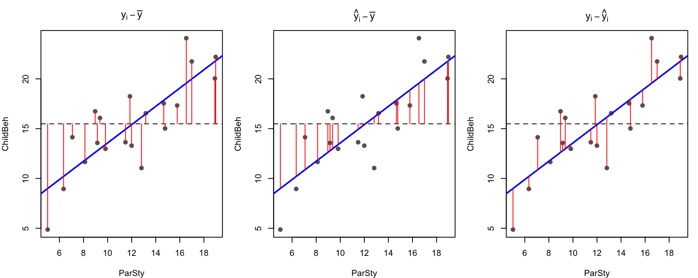
par(mfrow =c(1, 1))
Nel primo pannello gli scarti ignorano completamente il modello (distanze dalla media); nel secondo ci sono le distanze spiegate dalla retta; nel terzo ciò che resta: i residui.
In R i residui di un modello si ottengono con residuals():
Sommando i quadrati degli scarti otteniamo tre nuove quantità:
Devianza totale: somma dei quadrati degli scarti delle osservazioni dalla media \[\text{SS}_{T} = \sum_i (y_i - \bar{y})^2\]
Devianza di regressione (o spiegata): somma dei quadrati degli scarti dei punti sulla retta dalla media \[\text{SS}_{R} = \sum_i (\hat{y}_i - \bar{y})^2\]
Devianza residua: somma dei quadrati degli scarti delle osservazioni dai punti sulla retta \[\text{SS}_{E} = \sum_i (y_i - \hat{y}_i)^2\]
ossia che la devianza totale è la somma delle altre due: \(\text{SS}_T = \text{SS}_R + \text{SS}_E\).
Nota
L’algoritmo di stima dei parametri \(\beta_0\) e \(\beta_1\) (il metodo dei minimi quadrati, Ordinary Least Squares) ha come obiettivo proprio la minimizzazione della devianza residua: tra tutte le rette possibili, lm() sceglie quella che rende minima \(\sum_i (y_i - \hat{y}_i)^2\).
✏️ Esercizio 7 — Verificare la scomposizione della devianza
Torniamo al modello m1 (kid_score ~ mom_iq).
Calcolate i residui “a mano” come kidiq$kid_score - fitted(m1) e verificate che coincidono con residuals(m1).
Calcolate le tre devianze e verificate che \(\text{SS}_T = \text{SS}_R + \text{SS}_E\).
Calcolate \(R^2 = \text{SS}_R / \text{SS}_T\) e confrontatelo con summary(m1)$r.squared.
Tutto torna: i residui coincidono, la devianza totale è la somma delle altre due e il rapporto \(\text{SS}_R / \text{SS}_T\) è esattamente l’\(R^2\) riportato da summary().
5.3 La valutazione dei residui
I residui del modello rappresentano le differenze tra i valori osservati (\(y\)) e i valori attesi dal modello (\(\hat{y}\), sulla retta):
\[
r_i = y_i - X_i\hat{\beta}
\]
Rappresentando graficamente la distribuzione dei residui possiamo valutare la bontà del modello. La regola d’oro:
Importante
Se il modello è buono, i residui devono distribuirsi a caso: nessuna struttura, nessuna curvatura, nessun imbuto, nessun gruppo di punti che si comporta in modo diverso dagli altri. Qualsiasi pattern nei residui è informazione che il modello non ha catturato.
5.4 Casi anomali e casi influenti
Non tutte le osservazioni “strane” sono uguali. Conviene distinguere:
outlier: un’osservazione con \(Y\) anomalo rispetto a ciò che il modello prevede per il suo \(X\) (residuo grande);
caso a leva alta (leverage): un’osservazione con \(X\) estremo, lontano dal grosso dei dati — potenzialmente influente;
caso influente: un’osservazione che, da sola, cambia sensibilmente le stime del modello. Tipicamente: leva alta e residuo grande insieme.
Vediamolo con dati simulati: in ciascun pannello aggiungiamo ai dati (grigi) un solo punto rosso e confrontiamo la retta stimata con il punto (rossa, continua) e senza (nera, tratteggiata):
set.seed(20)x <-rnorm(25, 10, 1.5)y <-2+ x +rnorm(25, 0, 1)extra <-rbind(c(10, 22), # outlier: X centrale, Y anomaloc(18, 20), # leva alta: X estremo, Y coerentec(18, 9)) # outlier influente: X estremo, Y anomalotitoli <-c("Outlier", "Caso a leva alta", "Outlier influente")par(mfrow =c(1, 3), mar =c(4, 4, 3, 1))for (i in1:3) { xx <-c(x, extra[i, 1]); yy <-c(y, extra[i, 2])plot(xx, yy, pch =19, col =c(rep("grey60", 25), "red"),xlab ="X", ylab ="Y", main = titoli[i])abline(lm(y ~ x), lty =2, lwd =2) # senza il puntoabline(lm(yy ~ xx), col ="red", lwd =2) # con il punto}
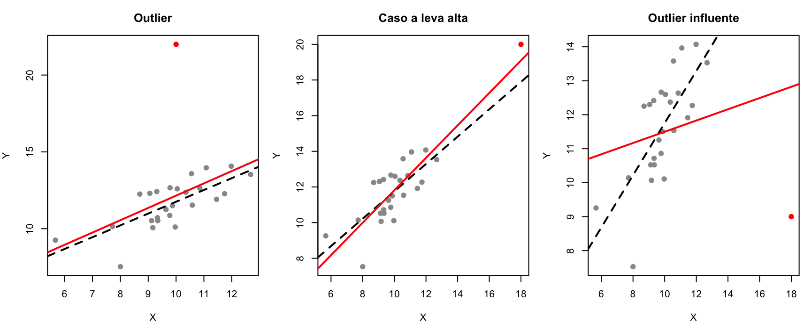
par(mfrow =c(1, 1))
l’outlier con \(X\) centrale sposta un po’ l’intercetta ma quasi per niente la pendenza;
il caso a leva alta ma coerente con la retta non cambia praticamente nulla (anzi, “stabilizza” la stima);
l’outlier influente (X estremo + Y anomalo) ruota vistosamente la retta: è questo il caso davvero pericoloso.
Il quarto pannello della diagnostica (Residuals vs Leverage, con la distanza di Cook) serve proprio a individuare questi casi. Guardiamo la diagnostica completa del modello con interazione:
par(mfrow =c(2, 2))plot(m4)
par(mfrow =c(1, 1))
5.5 Il predictive check
Il metodo più importante per valutare l’adattamento di un modello consiste nel simulare dati dal modello e confrontarli con i dati osservati:
se il modello è buono, i dati simulati dovrebbero assomigliare a quelli osservati;
viceversa, se il modello genera dati molto diversi da quelli osservati, non è un buon modello per quei dati.
Il pacchetto performance rende l’operazione immediata:
library(performance)check_predictions(m4)
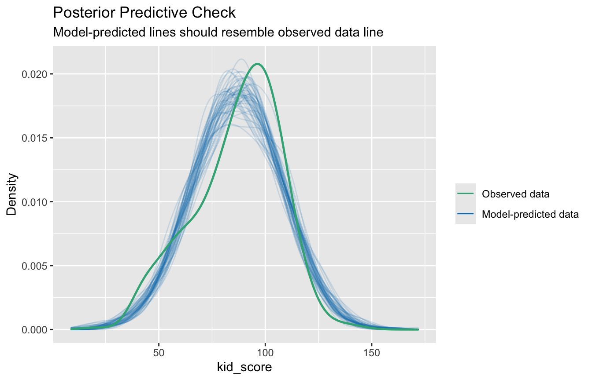
Ogni curva sottile è la distribuzione di un dataset simulato dal modello; la curva in evidenza è quella dei dati osservati. Qui le curve simulate ricalcano abbastanza bene quella osservata: il modello riproduce in modo ragionevole la forma della distribuzione dei punteggi.
✏️ Esercizio 8 — Predictive check a confronto
Eseguite check_predictions() sul modello m2 (solo mom_hs) e sul modello m4 (QI × diploma). Quale dei due riproduce meglio i dati osservati? Era prevedibile, guardando gli \(R^2\)?
Soluzione — Esercizio 8
check_predictions(m2)
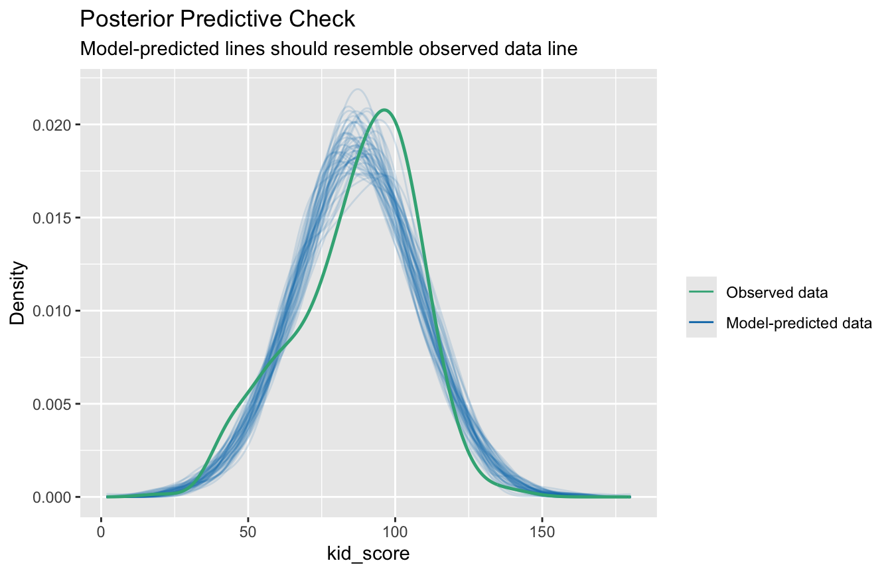
Con il solo diploma della madre il modello può prevedere solo due valori attesi (uno per gruppo): le distribuzioni simulate risultano più “lisce” e meno capaci di seguire la forma dei dati osservati rispetto a m4, che usando anche il QI genera una gamma di previsioni molto più ricca. Coerente con gli \(R^2\): 0.056 contro 0.230. Il predictive check rende visibile quello che gli indici riassumono in un numero.
5.6 Variabilità residua e variabilità spiegata
5.6.1 La variabilità residua: \(\sigma\)
Il parametro \(\sigma\) (Residual standard error nell’output di summary()) esprime la variabilità dei residui.
sigma(m4)
[1] 17.97147
Nel modello m4, \(\sigma \approx 18\) significa che il modello predice la variabile dipendente con un’accuratezza media di circa 18 punti: di tanto, in media, i punteggi osservati si discostano da quelli attesi. Sta a noi giudicare se, sulla scala della variabile, è una precisione accettabile.
5.6.2 La variabilità spiegata: \(R^2\) e \(\eta^2\)
Il fit del modello può essere riassunto sfruttando la relazione tra devianza residua e devianza totale:
la proporzione di variabilità spiegata dal modello nel suo complesso è il coefficiente di determinazione\(R^2\);
la proporzione di variabilità spiegata da ciascun effetto si stima con \(\eta^2\) (rapporto tra la devianza dell’effetto e quella totale), calcolabile dalla tabella ANOVA:
a <-anova(m4)eta2 <- a$"Sum Sq"/sum(a$"Sum Sq")data.frame(effetto =rownames(a), eta2 =round(eta2, 3))
Caso 1: dipendenza funzionale perfetta. Tutti i punti giacciono esattamente sulla retta di regressione: tutte le differenze \(y_i - \hat{y}_i\) sono nulle, quindi la devianza residua è zero e la devianza totale coincide con quella di regressione. \(R^2 = 1\).
Caso 2: indipendenza. La retta di regressione coincide con la media di \(Y\) (pendenza nulla): sono nulle tutte le differenze \(\hat{y}_i - \bar{y}\), la devianza di regressione è zero e la devianza totale coincide con quella residua. \(R^2 \approx 0\).
set.seed(1)x <-runif(30, 5, 20)y_perf <-2+ x # caso 1: nessun errorey_indip <-rnorm(30, 10, 5) # caso 2: Y non dipende da Xpar(mfrow =c(1, 2), mar =c(4, 4, 3, 1))plot(x, y_perf, pch =19, main =expression(R^2==1), xlab ="X", ylab ="Y")abline(lm(y_perf ~ x), col ="red", lwd =2)plot(x, y_indip, pch =19, main =expression(R^2%~~%0), xlab ="X", ylab ="Y")abline(lm(y_indip ~ x), col ="red", lwd =2)abline(h =mean(y_indip), lty =2)
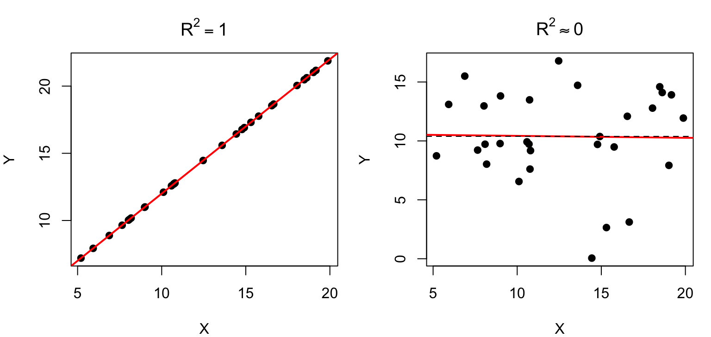
par(mfrow =c(1, 1))
✏️ Esercizio 9 — Da che cosa dipende R²?
Simulate due dataset con la stessa relazione \(y = 2 + 0.5x + \epsilon\) (\(n = 200\), \(x \sim \mathcal{N}(0,1)\)), ma errori con deviazione standard diversa: \(\sigma = 0.5\) nel primo e \(\sigma = 3\) nel secondo.
Stimate i due modelli: le stime di \(\beta_1\) sono simili?
Confrontate gli \(R^2\). Che cosa concludete sul rapporto tra “forza dell’effetto” e \(R^2\)?
Le stime di \(\beta_1\) sono vicine al vero valore 0.5 in entrambi i casi, ma \(R^2\) crolla da circa 0.46 a circa 0.02. Lo stesso effetto può produrre \(R^2\) altissimi o bassissimi a seconda della variabilità residua: \(R^2\) misura quanto il modello “copre” la variabilità di \(Y\), non quanto è grande o importante un coefficiente.
6 Confronto e selezione di modelli
All models are wrong, but some are useful. — George E. P. Box
Lo scopo di un modello statistico è essenzialmente questo: a partire da un insieme di dati osservati, identificare il processo latente sottostante che li ha generati. L’obiettivo del ricercatore è individuare il modello migliore.
6.1 I problemi
Sembra semplice, ma:
possono esistere molti modelli che spiegano gli stessi dati;
le variazioni casuali rendono difficile identificare il modello;
il modello vero potrebbe non essere tra quelli effettivamente messi alla prova.
Un obiettivo realistico, quindi, è identificare il modello che rappresenta la migliore approssimazione al modello vero.
6.2 L’overfitting
C’è una tensione fondamentale tra due proprietà di un modello:
la bontà di adattamento (goodness of fit): quanto bene il modello riproduce i dati osservati — e questa cresce sempre all’aumentare della complessità del modello;
la generalizzabilità: quanto bene il modello prevede dati nuovi — e questa cresce fino a un certo punto, poi peggiora (curva a U rovesciata; Pitt, Myung & Zhang, 2002).
Un modello troppo complesso finisce per adattarsi anche al rumore dei dati: è il fenomeno dell’overfitting.
…fitting is easy; prediction is hard. — Richard McElreath
Vediamolo con un esempio classico (McElreath): volume cranico e massa corporea di sette specie di ominidi. Con 7 punti, un polinomio di grado 6 passa esattamente per tutti i punti:
Il polinomio di grado 6 ha \(R^2 = 1\) ma, tra un punto e l’altro, arriva a prevedere un volume cranico negativo: si è adattato perfettamente ai dati e ha perso ogni capacità di generalizzare. Massimizzare il fit non è il criterio giusto per scegliere un modello: servono criteri che tengano conto anche della complessità.
6.3 Il confronto mediante ANOVA
Costruiamo una serie di modelli per i dati kidiq, dal modello nullo (solo intercetta) al modello con interazione:
m0 <-lm(kid_score ~1, data = kidiq)m1 <-lm(kid_score ~ mom_iq, data = kidiq)m2 <-lm(kid_score ~ mom_hs, data = kidiq)m3 <-lm(kid_score ~ mom_iq + mom_hs, data = kidiq)m4 <-lm(kid_score ~ mom_iq * mom_hs, data = kidiq)anova(m0, m1, m2, m3, m4)
Analysis of Variance Table
Model 1: kid_score ~ 1
Model 2: kid_score ~ mom_iq
Model 3: kid_score ~ mom_hs
Model 4: kid_score ~ mom_iq + mom_hs
Model 5: kid_score ~ mom_iq * mom_hs
Res.Df RSS Df Sum of Sq F Pr(>F)
1 433 180386
2 432 144137 1 36249 112.2346 < 2.2e-16 ***
3 432 170261 0 -26124
4 431 141757 1 28504 88.2552 < 2.2e-16 ***
5 430 138879 1 2878 8.9123 0.002994 **
---
Signif. codes: 0 '***' 0.001 '**' 0.01 '*' 0.05 '.' 0.1 ' ' 1
anova() confronta ogni modello con il precedente tramite test \(F\): l’aggiunta di parametri riduce significativamente la devianza residua?
Avviso
Questo approccio funziona solo per modelli annidati (ogni modello deve essere un caso particolare del successivo). Guardate la terza riga: confrontando m2 con m1 otteniamo Df = 0 e una somma dei quadrati negativa — un confronto privo di senso, perché m1 e m2 non sono annidati (nessuno dei due contiene l’altro). R esegue il calcolo lo stesso: sta a noi accorgerci del problema.
6.4 AIC e BIC
Due indici molto usati per il confronto fra modelli sono AIC (Akaike Information Criterion; Akaike, 1974) e BIC (Bayesian Information Criterion; Schwarz, 1978):
dove \(\mathcal{L}\) è la verosimiglianza del modello, \(k\) il numero di parametri e \(n\) il numero di osservazioni. Entrambi premiano il fit (primo termine) e penalizzano la complessità (secondo termine): misurano l’efficienza del modello in termini di previsione dei dati, proprio quello che l’overfitting comprometteva.
Dati \(k\) valori di AIC/BIC per \(k\) modelli diversi, si preferisce il modello con il valore più basso. Due vantaggi pratici rispetto all’ANOVA: i modelli non devono essere annidati, e non c’è nessun p-value di mezzo.
Sia per AIC sia per BIC il modello preferito è m4, quello con l’interazione.
6.5 La quantificazione dell’evidenza
Un grande vantaggio di AIC/BIC è la possibilità di stimare la plausibilità relativa di un modello rispetto a un altro, evitando tutti i problemi associati al p-value. Il calcolo dell’evidenza relativa (evidence ratio) è molto semplice:
sia \(\Delta\) la differenza tra i valori di AIC (o BIC) dei due modelli;
si calcola \(\ell = e^{\Delta/2}\).
Confrontiamo ad esempio il modello con interazione (m4) con quello senza (m3):
(DAIC <-AIC(m3) -AIC(m4))
[1] 6.903268
exp(DAIC /2)
[1] 31.55191
(DBIC <-BIC(m3) -BIC(m4))
[1] 2.830223
exp(DBIC /2)
[1] 4.116947
Conclusione con AIC: il modello con interazione è circa 32 volte più plausibile di quello senza interazione.
Conclusione con BIC: il modello con interazione è circa 4 volte più plausibile di quello senza.
(Il BIC penalizza la complessità più severamente dell’AIC, da cui la differenza.)
6.6 Verosimiglianza relativa e pesi di Akaike
Possiamo estendere il ragionamento a tutti i modelli insieme, calcolando per ciascuno la verosimiglianza relativa rispetto al modello peggiore (qui il nullo):
Il modello m4 (kid_score ~ mom_iq * mom_hs) risulta circa \(2.19 \times 10^{23}\) volte più verosimile del modello nullo.
Infine, possiamo normalizzare le verosimiglianze relative per ottenere i pesi di Akaike, interpretabili come la probabilità di ciascun modello \(M_i\), dati i dati e l’insieme dei modelli considerati \(\mathcal{M}\):
Praticamente tutto il peso va a m4: dato questo insieme di modelli, è di gran lunga il candidato migliore.
6.7 Il pacchetto MuMIn
Il pacchetto MuMIn automatizza l’intera procedura e produce una tabella di selezione completa (stime, gradi di libertà, log-verosimiglianza, AIC, delta e pesi):
Ogni cella riporta il logaritmo dell’evidenza del modello di riga rispetto al modello di colonna: valori positivi favoriscono il modello di riga (es. m4 vs m3: \(\log \ell = 3.5\), cioè \(\ell \approx 32\), come calcolato prima).
6.8 I vantaggi dei criteri di informazione
Riassumendo, rispetto al confronto basato su test e p-value:
si possono confrontare tutti i modelli che condividono lo stesso modello nullo, anche non annidati;
i valori di AIC/BIC calcolati sono indipendenti dall’ordine e dal numero dei modelli considerati;
evidenze relative e pesi di Akaike danno al lettore un quadro molto più ricco dei meriti relativi dei modelli in competizione, quantificando la fiducia statistica nel modello con l’AIC più basso (Burnham & Anderson, 2002; Wagenmakers & Farrell, 2004).
Esempio di frase per un articolo: “il modello m4 risulta circa \(2.19 \times
10^{23}\) volte più verosimile del modello nullo, con peso di Akaike \(w = 0.97\) nell’insieme dei cinque modelli considerati”.
✏️ Esercizio 10 — Un’analisi completa
Mettiamo insieme tutto quello che abbiamo visto. Partendo dal modello m4 (kid_score ~ mom_iq * mom_hs), chiedetevi se vale la pena aggiungere le altre variabili disponibili:
stimate i modelli che aggiungono a m4: l’età della madre (mom_age); la condizione lavorativa (mom_work); entrambe;
costruite la tabella di confronto con AIC, delta e pesi di Akaike (a mano o con model.sel());
quale modello scegliete? Con quanta fiducia?
controllate la diagnostica e il predictive check del modello scelto;
df AIC delta w
mA 5 3745.086 0.0000000 0.49239740
mB 6 3745.934 0.8486496 0.32213197
mC 8 3747.997 2.9113243 0.11484966
mD 9 3748.970 3.8839180 0.07062097
Il modello più semplice mA resta il preferito (\(w \approx 0.49\)), seguito da mB (\(\Delta \approx 0.8\)): un delta sotto 2 indica che i due modelli sono sostanzialmente equivalenti, e in questi casi conviene la parsimonia. Né l’età né la condizione lavorativa della madre migliorano la capacità predittiva abbastanza da giustificare i parametri aggiuntivi.
par(mfrow =c(2, 2))plot(mA)
par(mfrow =c(1, 1))
check_predictions(mA)
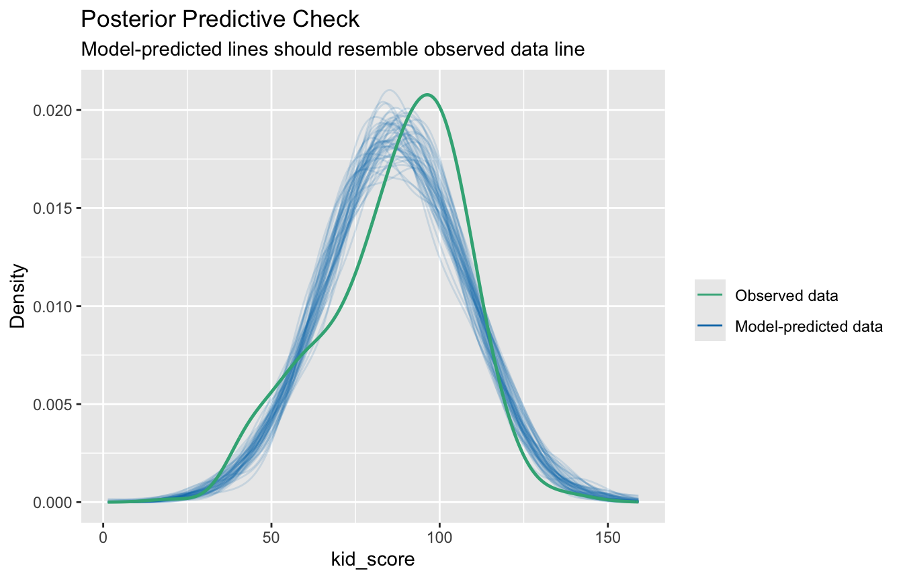
Possibile conclusione: “Tra i modelli considerati, quello con QI della madre, diploma e loro interazione risulta il migliore (AIC = 3745.1, \(w = 0.49\)); l’aggiunta di età e condizione lavorativa della madre non migliora la capacità predittiva (\(\Delta\text{AIC} < 4\), a fronte di più parametri). Il modello spiega circa il 23% della variabilità dei punteggi, con un errore medio di previsione di circa 18 punti.”
7 Riferimenti bibliografici
Testi di riferimento:
Fox, J. (1997). Applied Regression Analysis, Linear Models, and Related Methods. SAGE.
Fox, J. (2002). An R and S-Plus Companion to Applied Regression. SAGE.
Gelman, A., Hill, J., Vehtari, A. (2020). Regression and Other Stories. Cambridge University Press.
In italiano:
Bortot, P., Ventura, L., Salvan, A. (2000). Inferenza Statistica: Applicazioni con S-PLUS e R. Cedam, Padova.
Grigoletto, M., Ventura, L., Pauli, F. (2017). Modello lineare. Teoria e applicazioni con R. Giappichelli, Torino.
Pastore, M. (2015). Analisi dei dati in psicologia (con applicazioni in R). Il Mulino, Bologna.
Sul confronto fra modelli:
Burnham, K. P., Anderson, D. R. (2002). Model Selection and Multimodel Inference. Springer.
Wagenmakers, E.-J., Farrell, S. (2004). AIC model selection using Akaike weights. Psychonomic Bulletin & Review, 11, 192–196.
Pacchetti R utilizzati in questa dispensa:
ggplot2 (Wickham, 2016) — grafici;
sjPlot (Lüdecke, 2023) — visualizzazione degli effetti dei modelli;
effects (Fox & Weisberg, 2019) — visualizzazione degli effetti dei modelli;
performance (Lüdecke et al., 2021) — predictive check e diagnostica;
MuMIn (Bartoń, 2020) — selezione di modelli.
Materiale didattico adattato dalle slide del Prof. Massimiliano Pastore.